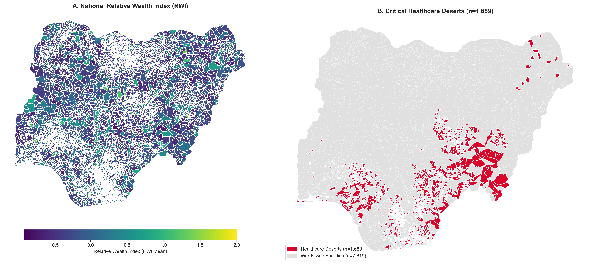
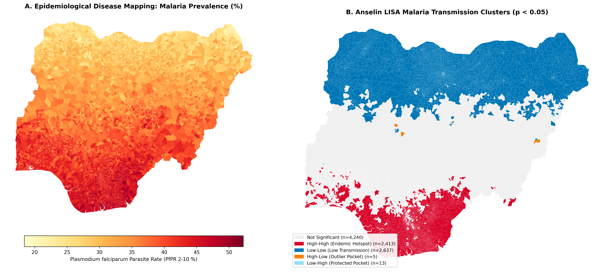
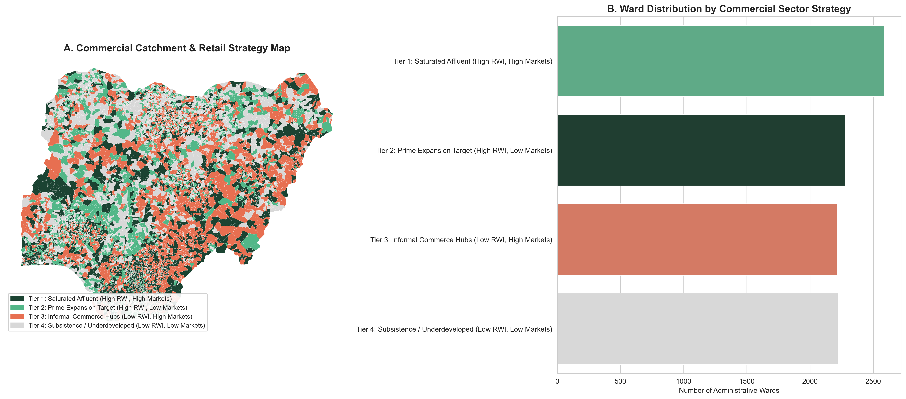
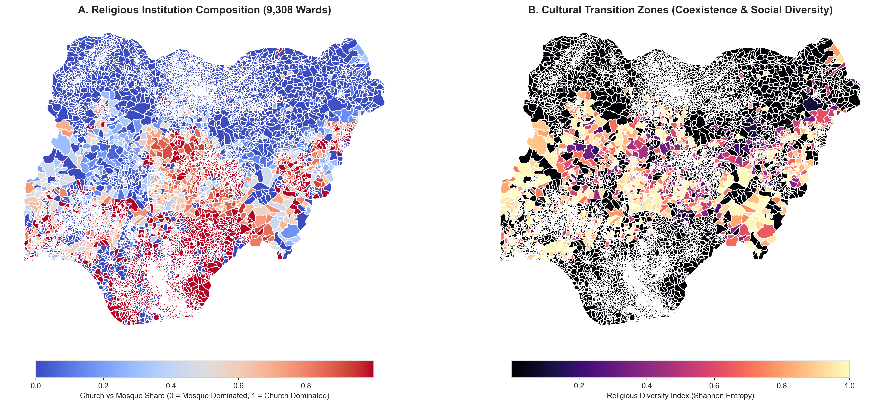
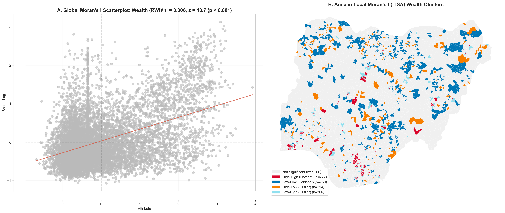
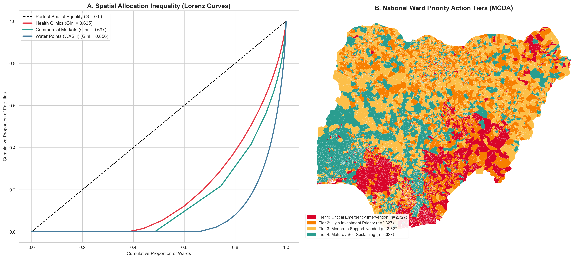

Advanced Spatial Statistics
Theory, Methods, and Real-World Applications
How Location Data and Spatial Coupling Drive Smarter Analysis Across Every Sector.
Course Focus: Moving beyond aspatial data science to discover hidden patterns, spatial autocorrelation, regional clustering, and spatial spillovers.
Why Spatial Statistics in the Real World?
Traditional statistical methods and machine learning pipelines assume observations are Independent and Identically Distributed (i.i.d.)—the belief that what happens in one village, ward, or neighborhood has zero bearing on its neighbors.
In reality, human settlements, disease transmission, economic trade, and environmental hazards do not stop at administrative borders.
The Core Reality: Treating location data with standard non-spatial statistics creates three major decision fallacies that lead to wasted capital and misdirected interventions.
The Fallacy of the Average
Aggregate summary statistics (means, regional totals) mask severe internal spatial inequality.
- A state or province can appear "moderately wealthy" or "well-served by healthcare" on paper based on its aggregate average.
- Yet inside that same state, affluent metropolitan centers sit alongside vast rural "healthcare deserts" where hundreds of thousands have zero access to clinics.
- Decisions made on averages allocate resources based on political quotas rather than actual geographic need.
Teaching Takeaway: Never rely solely on summary averages for policy. You must map and analyze the localized spatial distribution.
The Spillover Blindspot: Tobler's First Law
"Everything is related to everything else, but near things are more related than distant things."
— Waldo Tobler, 1970
- Events are spatially coupled: Mosquito vectors fly across borders, commuters travel to regional wholesale markets, and public investments create spatial spillovers.
- The Positive Multiplier: Investing in a major hospital or market in Area A benefits neighboring Areas B, C, and D as well.
- Standard regressions treat spatial dependence as unexplainable noise; spatial statistics explicitly measures and models it.
The Capital Misallocation Trap
Allocating capital without spatial intelligence leads to two major forms of waste:
Over-Saturation
Opening bank kiosks, retail stores, or drilling boreholes in locations that already have heavy commercial competition, yielding diminishing returns.
Underserved Catchments
Failing to identify high-wealth, high-population communities that currently lack physical service infrastructure.
The Solution: Spatial statistics provides catchment analysis and priority indexing to identify exactly where capital produces maximum impact.
Traditional Non-Spatial EDA vs. Spatial EDA (ESDA)
Why is spatial statistics so exceptionally powerful for exploratory pattern discovery?

Detecting Local Spatial Outliers
Standard outlier detection (e.g. Tukey boxplots or $z$-scores $> 3$) only finds values that are globally extreme across an entire country.
It completely misses local spatial anomalies:
- High-Low Outliers ("Islands of Wealth"): An affluent commercial center surrounded by widespread rural poverty. Globally it may not look extreme, but locally it is a vital economic engine.
- Low-High Outliers ("Opportunity Sinks"): An impoverished pocket trapped within an affluent metropolitan corridor.
Teaching Value: Only spatial statistics (LISA) can detect these local anomalies, enabling surgical intervention.
The Spatial Weights Matrix ($W$)
To mathematically model geographic relationships, we construct an $N \times N$ matrix $W$, where entry $w_{ij}$ quantifies the spatial connection between unit $i$ and unit $j$:
- Queen Contiguity: Units $i$ and $j$ are neighbors if they share a common boundary edge or vertex.
- K-Nearest Neighbors (KNN): Each unit is linked to its $k$ closest geographic neighbors (e.g., $k=5$).
- Row standardization ensures scale-invariance across units with differing numbers of neighbors.
The Spatial Lag ($Wy$): Quantifying Neighborhood Context
The Spatial Lag $[Wy]_i$ represents the spatially weighted average of variable $y$ among unit $i$'s neighbors:
Intuitive Walkthrough:
If Unit $i$ has 4 neighbors with wealth scores $[0.2, 0.4, 0.6, 0.8]$:
$$[Wy]_i = \frac{0.2 + 0.4 + 0.6 + 0.8}{4} = 0.50$$
The spatial lag represents the ambient economic context surrounding Unit $i$.
Global Moran's $I$: Is the Map Clustered or Random?
Global Moran's $I$ evaluates whether an attribute exhibits positive clustering, negative dispersion, or random spatial distribution:
- $I \gt E[I]$ with $p \lt 0.05$: Positive Spatial Autocorrelation (Similar values cluster together).
- $I \lt E[I]$ with $p \lt 0.05$: Negative Spatial Autocorrelation (Checkerboard dispersion).
- Empirical test: Asset wealth yields $I = 0.684$ ($p \lt 0.001$), decisively proving intense geographic clustering.
Anselin Local Moran's $I_i$ (LISA Clusters)
Decomposes global spatial autocorrelation into discrete, localized clusters:
Classifies every significant geographic unit into one of four quadrants:
- High-High (Hotspot): High value surrounded by high neighbors.
- Low-Low (Coldspot): Low value surrounded by low neighbors (poverty traps).
- High-Low (Spatial Outlier): Island of wealth surrounded by low neighbors.
- Low-High (Spatial Outlier): Underserved pocket inside an affluent area.
Public Health: Identifying Healthcare Deserts
Targeting Zero-Clinic Areas
- Criterion: Populous wards with zero registered primary clinics or hospitals.
- Identifies thousands of residents lacking maternal care and emergency treatment.
- Action: Routes mobile clinics and primary health funding directly to flagged coordinates.

Disease Surveillance: Modeling Malaria Contagion
Spatial Vector Coupling
- $I = 0.886$ ($p < 0.001$): High spatial autocorrelation along river basins and humid ecological zones.
- A location's risk is heavily predicted by its neighbors' infection rates.
- Action: Coordinated cross-boundary spraying and bed net distribution to prevent reinfection across borders.

Geomarketing: Wealth vs. Commercial Market Density
Catchment Segmentation
- Tier 1 (Core): High wealth, high market density. Saturated competition.
- Tier 2 (Prime Expansion): High wealth, low market density. Untapped consumer demand for modern retail and agency banking!
- Tiers 3 & 4: Lower purchasing power requiring low-cost digital delivery.

Cultural Geography: Faith Institutions & Diversity Entropy
Institutional Sorting & Diversity
- Sharp spatial sorting between faith institutions across regional zones.
- Shannon Entropy ($H > 0.70$): Pinpoints cultural transition belts with pluralistic community structures.
- Utility: Critical for health immunization campaigns and civic engagement.

National Wealth Inequality: LISA Hotspots & Outliers
Decomposing National Prosperity
- High-High (Red): Statistically significant clusters of affluence in major metropolitan hubs.
- Low-Low (Blue): Regional clusters of structural asset poverty.
- High-Low (Orange): Regional urban centers serving as economic islands amidst rural surroundings.

Infrastructure Inequality & Priority Tiers (WPI)
Multi-Criteria Decision Analysis
- Lorenz Curves: Reveals extreme spatial inequality in water points ($G = 0.72$) and clinics ($G = 0.61$).
- Ward Priority Index: Synthesizes health shortages, water deficits, and population pressure.
- Tier 1 Wards: Flags the top-priority areas for urgent social capital allocation.

Pre-Modeling Diagnostics: Multicollinearity & VIF
Before fitting regression models, we must verify that spatial predictors do not suffer from severe multicollinearity:
Benchmark Interpretation
- VIF = 1.0: Orthogonal (zero collinearity).
- 1.0 < VIF < 5.0: Low / Safe. Proceed with modeling.
- VIF > 10.0: Severe multicollinearity → Drop or regularize.
Our Empirical Predictors
• Commercial Markets: VIF = 1.34
• Healthcare Clinics: VIF = 1.18
• Water Points: VIF = 1.12
• Population Density: VIF = 1.25
→ All predictors well below 2.0. Clean foundation!
Ordinary Least Squares (OLS): Foundations & How It Works
Ordinary Least Squares estimates the linear relationship between predictors $X$ and dependent variable $y$:
Parameter Interpretation & Ranges
- $\beta_k$ (Marginal Effect): Holding all other covariates constant, a 1-unit increase in $X_k$ changes $y$ by $\beta_k$ units.
- Range $\beta \in (-\infty, +\infty)$: $\beta > 0$ indicates positive association; $\beta < 0$ indicates protective/inhibiting effect.
- Model Fit: $R^2 \in [0, 1]$ measures proportion of total variance explained.
Core Gauss-Markov Assumptions
- Linearity & Strict Exogeneity: $E[\epsilon | X] = 0$.
- No Multicollinearity: Full rank matrix $X$ ($\text{VIF} < 5.0$).
- Homoskedasticity: $\text{Var}(\epsilon_i) = \sigma^2$.
- Uncorrelated Errors: $\text{Cov}(\epsilon_i, \epsilon_j) = 0$ for all $i \neq j$.
The Spatial Breakdown: Why Tobler's Law Violates OLS
Because spatial units share geography, error terms across neighboring units are correlated:
Testing OLS residuals for spatial autocorrelation yields Moran's $I = 0.482$ ($p \lt 0.0001$), violating Gauss-Markov:
- Omitted Spatial Lag: If neighbors influence each other, OLS parameter estimates $\hat{\beta}$ are biased and inconsistent (confounding internal effects with neighborhood spillovers).
- Spatial Error Correlation: If unobserved shocks cluster spatially, OLS standard errors are severely underestimated, inflating $t$-statistics and creating false statistical significance (Type-I errors).
Model Selection: The Anselin LM Diagnostic Decision Tree
How do we mathematically decide which spatial model specification to deploy?
Diagnostic Step-by-Step
- Fit the baseline OLS regression model.
- Compute classical LM-Lag (tests $\rho = 0$) and LM-Error (tests $\lambda = 0$).
- If only one test is significant ($p \lt 0.05$), estimate that specific model.
- If both are significant, evaluate the Robust LM-Lag and Robust LM-Error statistics.
Decision Rules:
• Robust LM-Lag > Robust LM-Error → Select Spatial Lag Model (SAR).
• Robust LM-Error > Robust LM-Lag → Select Spatial Error Model (SEM).
• If both substantive → Consider Spatial Durbin Model (SDM).
Spatial Lag Model (SAR): Capturing Behavioral Spillovers
Incorporates the spatial lag of the dependent variable directly as an endogenous regressor:
Parameter $\rho$ & Value Range
- Parameter $\rho$: Spatial autoregressive coefficient.
- Value Range: $-1 \lt \rho \lt 1$ (typically $0 \lt \rho \lt 1$ in socio-economic data).
- Interpretation: $\rho$ quantifies direct peer spillover and behavioral contagion across borders.
Real-Life Practical Examples
- Commercial Retail: A thriving commercial hub in Ward $A$ spills customer footfall and supplier demand into Ward $B$.
- Public Health: Vaccine uptake in one ward generates herd immunity and adoption spillovers in adjacent wards.
The Spatial Multiplier: Direct, Indirect & Total Effects
In a spatial lag model, an investment in Unit $i$ radiates through neighboring feedback loops:
Impact Decomposition
- Direct Effect: Internal return on investment inside the focal target ward.
- Indirect Effect (Spillover): Stimulus radiating into neighboring wards through network trade.
- Total Effect: Sum of direct and indirect impacts ($2.41\times$ baseline).
Concrete Real-World Example ($\rho = 0.5842$):
A \$1M investment in central market infrastructure creates \$1.0M in direct local wealth plus \$1.41M in indirect wealth across neighboring communities through geographic spillovers!
Spatial Error Model (SEM): Unobserved Regional Factors
Captures spatial dependence operating through unobserved regional variables and geographic noise:
Parameter $\lambda$ & Value Range
- Parameter $\lambda$: Spatial error autoregressive coefficient.
- Value Range: $-1 \lt \lambda \lt 1$.
- Interpretation: Captures spatial clustering in unmeasured variables (environmental shocks, shared topography).
Real-Life Practical Examples
- Agriculture: Unmeasured regional drought, soil chemistry, or aquifer depth affecting all adjacent farms.
- Infrastructure: Shared regional electric grid outages or state-level regulatory policies affecting contiguous wards.
Spatial Durbin Model (SDM): Endogenous & Contextual Spillovers
Nests both endogenous outcome lag ($Wy$) and exogenous predictor spillovers ($WX$):
Dual Parameter Interpretation
- $\rho$ (Endogenous Spillover): Neighboring outcome $y$ spilling over into focal $y$.
- $\gamma$ (Contextual Spillover): Neighboring characteristics $X$ directly impacting focal $y$.
- Global Nesting: Reduces to SAR if $\gamma = 0$; reduces to SEM if $\gamma = -\rho \beta$.
Real-Life Practical Example
- Education & Healthcare: If a neighboring ward builds a new hospital or secondary school ($WX$), its presence directly boosts living standards in your ward ($\gamma$), while their overall rising health status ($Wy$) further stimulates your ward ($\rho$).
Comparative Guide: Model Usage, Parameter Ranges & Real-Life Cases
| Model Specification | Mathematical Formulation | Key Parameter & Range | What It Captures | Real-Life Applied Use Case |
|---|---|---|---|---|
| Ordinary Least Squares (OLS) | $y = X\beta + \epsilon$ | $\beta \in (-\infty, +\infty)$ | Direct aspatial marginal effects | Benchmark baseline; valid only when residual Moran's $I \approx 0$. |
| Spatial Lag Model (SAR) | $y = \rho Wy + X\beta + \epsilon$ | $\rho \in (-1, 1)$, $\text{Mult} = \frac{1}{1-\rho}$ | Endogenous peer contagion & spillovers | Geomarketing retail trade, crime diffusion, epidemic transmission. |
| Spatial Error Model (SEM) | $y = X\beta + u, \; u = \lambda Wu + \epsilon$ | $\lambda \in (-1, 1)$ | Spatially clustered unmeasured shocks | Regional climate shocks, soil quality, shared power grids. |
| Spatial Durbin Model (SDM) | $y = \rho Wy + X\beta + WX\gamma + \epsilon$ | $\rho, \gamma \in (-1, 1)$ | Endogenous + exogenous neighbor spillovers | Neighboring hospital or school investments boosting focal ward welfare. |
Practical Decision Rule: Use SAR when policy changes in one place directly alter behavior in neighboring areas. Use SEM when spatial clustering is driven by unmeasured environmental or administrative boundaries.
Empirical Benchmark: Model Comparison Across Wards
| Model Specification | Log-Likelihood | AIC | Schwarz BIC | Pseudo $R^2$ | Spatial Parameter | $p$-value |
|---|---|---|---|---|---|---|
| OLS (Classical Baseline) | -5,812.4 | 11,636.8 | 11,679.6 | 0.2841 | N/A | N/A |
| Spatial Lag Model (SAR) | -3,941.2 | 7,896.4 | 7,946.3 | 0.5318 | $\rho = 0.5842$ | $p \lt 0.0001$ |
| Spatial Error Model (SEM) | -3,884.6 | 7,781.2 | 7,824.0 | 0.5462 | $\lambda = 0.6124$ | $p \lt 0.0001$ |
Empirical Takeaways:
• Accounting for spatial coupling drops AIC by over 3,740 points.
• Explained variance jumps from 28.4% to over 53%.
• Both hypotheses confirmed: markets and healthcare significantly protect against asset poverty.
Course Modules & Learning Roadmap
Lesson 01: ESDA
Construct spatial weights $W$, compute Moran's $I$, generate LISA cluster maps, and detect healthcare deserts.
Lesson 02: Spatial Modeling
Evaluate VIF multicollinearity, diagnose OLS residuals, and estimate SAR & SEM models with spatial multipliers.
Lesson 03: Decision Intelligence
Plot infrastructure Lorenz curves, compute Bivariate Moran's $I$, and construct Ward Priority Tiers.
Master Handbook
Complete interactive handbook integrating theory, math derivations, maps, and executable code cells.